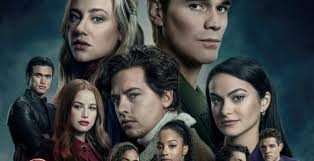
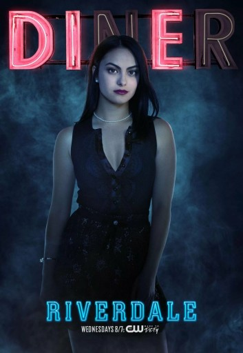

Ciekawostki
Wszystko co warto wiedzieć
Bohaterowie:
KJ Apa jako Archie Andrew. To licealista grający w szkolnej drużynie futbol amerykańskiego, zakochany w muzyce.
Lili Reinhart jako Betty Cooper. Bystra i dobrze ucząca się dziewczyna, która od dawna jest zakochana w swoim przyjacielu, Archiem.
Camila Mendes jako Veronica Lodge. Dziewczyna z bogatego domu, która wraz z rodziną przeprowadziła się do Riverdale z Nowego Jorku.
Cole Sprouse jako Jughead Jones. Outsider ze skłonnością do filozofowania. Jego rodzina zamieszana jest w działalność lokalnego gangu.
Madelaine Petsch jako Cheryl Blossom. Dziewczyna pochodząca z najbogatszej rodzin w okolicy. Manipulantka pełna sprzeczności.
Ashleigh Murray jako Josie McCoy. Liderka lokalnego zespołu, pełna werwy i pewności siebie.
Casey Cott as Kevin Keller. Homoseksualny licealista, przyjaźniący się z paczką głównych bohaterów.
Fabuła serialu została oparta o serię komiksów wydawanych przez Archie Comics. Opisywały one perypetię grupy nastolatków, którzy stali się też głównymi bohaterami serialu. Produkcja opowiada historię przyjaciół żyjących w niewielkim miasteczku Riverdale. Pewnego dnia dochodzi w nim do tragedii, w której ginie jeden z kolegów z ich szkoły – Jason Blossom. Nastolatki wspólnie chcą odkryć tajemnicę i dowiedzieć się, kto i co tak naprawdę stoi na śmiercią Jasona. Oczywiście, jak to w serialach o nastolatkach dla nastolatków bywa, w odcinkach nie brakuje również wątków miłosnych oraz rozbudowujących przyjaźń między bohaterami.

